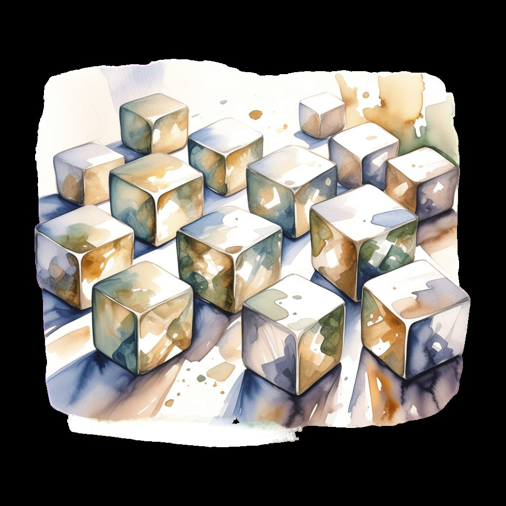

The model is a commodity — swap Claude for the next best thing and the code still works. What can't be swapped is the infrastructure that feeds it context, captures what matters, and forgets what doesn't. That's the harness. Two ideas hold it up:
1 Real knowledge is uncovered over time — debated, investigated, reviewed before it earns a place in the catalog. This is where the compounding happens. Not from accumulating everything, but from refining what survives.
2 Always re-explaining yourself is tiresome, yet most of what's said doesn't deserve permanent storage. A short 30-day history of discussions provides just enough recall to keep things on track without drowning in noise.
graph TB
subgraph " Input "
A["Telegram
(mobile voice)"] --> B[The Harness]
C["Claude Code
(desktop)"] --> B
end
subgraph " Memory "
B -->|"thin straw (pond.search)"| D[Dirty Pond — raw conversation capture]
D --> F[TimescaleDB — 30 day window]
G[Cold Reservoir — curated steel] -->|"knowledge index"| B
end
subgraph " Refinement "
B --> H[Two Monks Journal]
H --> I[sparks → threads → handbooks]
I -->|"furnace"| G
end
Two pools, different temperatures. The dirty pond captures everything — raw prompt/response pairs from every session, tagged by source, stored in TimescaleDB with a 30-day window. Automatic, unfiltered, searchable. The noise floor.
The cold reservoir is the opposite — curated knowledge that survived the furnace. Partnership principles, builder shape, terrain choices, visions. Loaded on demand when a topic matches. Pieces of steel, not fourteen thousand facts.
The journal is the engine. The prompt a steering wheel. Each session produces sparks — ideas that might matter. Sparks that keep coming back graduate to threads. Threads that survive into daily use become handbooks. The spec-driven development playbook came from this loop — a spark from production code, refined, then adopted by the team. Everything else burns in the furnace. What survives is steel — knowledge compressed by use and refined by forgetting.
This is how the partnership compounds. Not by accumulating everything, but by forgetting almost everything and keeping only what earned survival. A year of sessions doesn't produce a bigger pile. It produces a sharper edge.